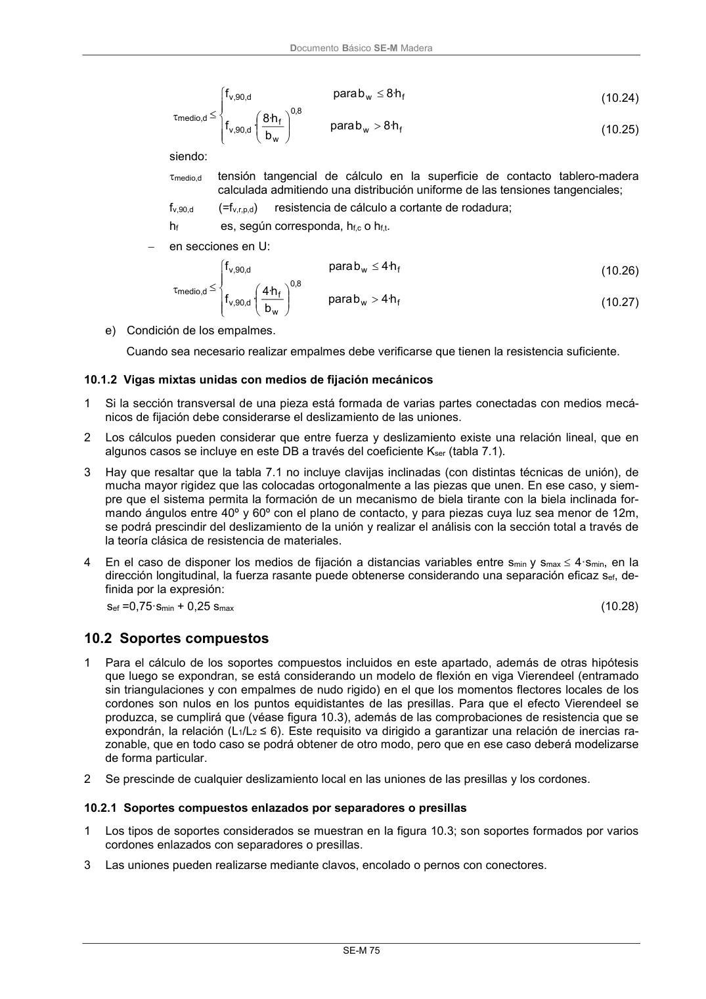

DB-SE-M Madera · edición 2019-12-20 · capa oficial
Documento DB-SE-M-oficial · SHA-256 del PDF 26b5819839ebfda78b0b119c5e76a0a37773b0d763c05688541870075df93718
Página física 81 de 132.
Copia fiel del PDF fuente · Fuente oficial
Ficha de la disposición en la fuente oficial
Formato: Texto de la página (Markdown)
Documento Básico SE-M Madera SE-M 75 f w 8 , 0 w f d , 90 , v f w d , 90 , v d , medio h· 8 b para b h· 8 · f h· 8 b para f (10.24) (10.25) siendo: medio,d tensión tangencial de cálculo en la superficie de contacto tablero-madera calculada admitiendo una distribución uniforme de las tensiones tangenciales; fv,90,d (=fv,r,p,d) resistencia de cálculo a cortante de rodadura; hf es, según corresponda, hf,c o hf,t. en secciones en U: f w 8, 0 w f d, 90 ,v f w d, 90 ,v d, medio h· 4 b para b h· 4 · f h· 4 b para f (10.26) (10.27) e) Condición de los empalmes. Cuando sea necesario realizar empalmes debe verificarse que tienen la resistencia suficiente. 10.1.2 Vigas mixtas unidas con medios de fijación mecánicos 1 Si la sección transversal de una pieza está formada de varias partes conectadas con medios mecá- nicos de fijación debe considerarse el deslizamiento de las uniones. 2 Los cálculos pueden considerar que entre fuerza y deslizamiento existe una relación lineal, que en algunos casos se incluye en este DB a través del coeficiente Kser (tabla 7.1). 3 Hay que resaltar que la tabla 7.1 no incluye clavijas inclinadas (con distintas técnicas de unión), de mucha mayor rigidez que las colocadas ortogonalmente a las piezas que unen. En ese caso, y siem- pre que el sistema permita la formación de un mecanismo de biela tirante con la biela inclinada for- mando ángulos entre 40º y 60º con el plano de contacto, y para piezas cuya luz sea menor de 12m, se podrá prescindir del deslizamiento de la unión y realizar el análisis con la sección total a través de la teoría clásica de resistencia de materiales. 4 En el caso de disponer los medios de fijación a distancias variables entre smin y smax 4·smin, en la dirección longitudinal, la fuerza rasante puede obtenerse considerando una separación eficaz sef, de- finida por la expresión: sef =0,75·smin + 0,25 smax (10.28) 10.2 Soportes compuestos 1 Para el cálculo de los soportes compuestos incluidos en este apartado, además de otras hipótesis que luego se expondran, se está considerando un modelo de flexión en viga Vierendeel (entramado sin triangulaciones y con empalmes de nudo rigido) en el que los momentos flectores locales de los cordones son nulos en los puntos equidistantes de las presillas. Para que el efecto Vierendeel se produzca, se cumplirá que (véase figura 10.3), además de las comprobaciones de resistencia que se expondrán, la relación (L1/L2 ≤ 6). Este requisito va dirigido a garantizar una relación de inercias ra- zonable, que en todo caso se podrá obtener de otro modo, pero que en ese caso deberá modelizarse de forma particular. 2 Se prescinde de cualquier deslizamiento local en las uniones de las presillas y los cordones. 10.2.1 Soportes compuestos enlazados por separadores o presillas 1 Los tipos de soportes considerados se muestran en la figura 10.3; son soportes formados por varios cordones enlazados con separadores o presillas. 3 Las uniones pueden realizarse mediante clavos, encolado o pernos con conectores.
